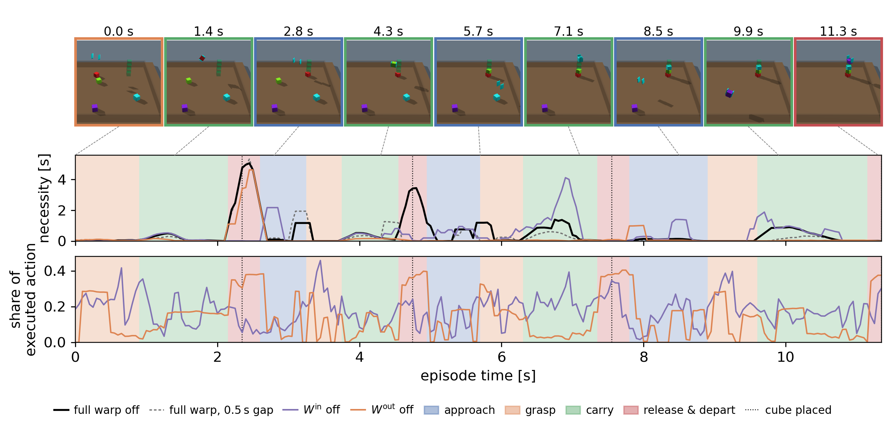

Reinforcement learning policies for robot manipulation degrade when the number of objects \(N\) in the scene grows beyond the training range. This is a covariate shift that also changes the dimension of the state. We propose WAVE (Warping Actions and Views of an Expert), which extends a pretrained single-object skill to many objects without updating its weights.
WAVE has three parts. First, a selection policy picks the one object the robot works on next. Second, a warping policy reads a local view of the scene around that object, whose size does not depend on \(N\). It emits a multiplier and an offset for every quantity the skill reads and every action it outputs. Third, the skill acts under this affine warp. It is shown a scene that holds a single object, while the warp steers it around the objects it is not shown and edits the actions that are sent to the robot. Both the selection and warping policies are trained with PPO on the multi-object reward and use the skill as a black box, so WAVE is task-general and skill-agnostic. It requires only that the skill was trained on the same embodiment and that every object has a goal pose. We also analyze the probability that the composition places all \(N\) objects within a budget of skill invocations that grows linearly in \(N\).
We evaluate WAVE on cube arrangement tasks with a gantry robot and with a Franka Panda arm. Trained with at most nine cubes, it generalizes zero-shot to several times its training count, on the gantry to scenes of up to thirty cubes. Published methods that learn multi-object manipulation show count generalization up to six objects. Fine-tuning the skill, learning from the same local view without it, and an entity transformer, even when distilled from the pretrained skill, all collapse within their training counts.
Simulation: gantry robot, cube stacking (h=3)
Simulation: Franka Panda, cube stacking (h=3)
Real Franka Panda: a policy fine-tuned for five-cube towers building a five-high tower (5× real time)
WAVE takes a skill \(\mu\) that can move a single object to its goal and uses it, without changing its weights, to arrange many objects. A selection policy picks one object \(x^*\) at a time, and \(\mu\) is shown a scene in which this object is the only one. The other objects are still there, so a warping policy \(\psi\) reads the neighborhood of the object and bends the inputs and actions of \(\mu\) where needed, for example to steer the robot around a stack or to let go of a cube on top of another:
The presentation \(\sigma\) shows \(\mu\) only \(x^*\) and its goal, and the crop \(\chi\) is a fixed-width local view around \(x^*\). For every channel \(j\) of \(\mu\)'s input and action, the warp applies \(\tilde z_j = m_j z_j + o_j\): at \(m_j = 1, o_j = 0\) the channel passes through unchanged, and at \(m_j = 0\) the warping policy takes it over. Editing the input makes \(\mu\) itself compute a corrected action; editing the output produces behavior \(\mu\) never learned, such as the release onto a stack.
WAVE generalizes to higher counts for two reasons. First, \(\mu\) can already place a single object, so it is a strong exploration prior and training only learns the corrections needed with many objects. Second, nothing \(\mu\) or the warping policy reads grows with the number of objects: thirty cubes produce the same kind of input as nine.
Hover over (or tap) a component for details; some link to the related figure or section.
A per-pair network scores every neighbor and an elementwise minimum reduces the scores to one neighborhood encoding, independent of the count. A small transformer emits one categorical distribution per warp parameter over a fixed grid. Every distribution starts on the identity, so training starts from the unwarped skill.
Whether WAVE completes a task of \(N\) objects within a number of skill invocations linear in \(N\) is decided by the net progress per attempt \(\rho = (1-\delta_{\mathrm{cov}})\,p_e - \lambda\). If \(\rho > 0\), then for every \(c > 1/\rho\)
Six cube arrangement tasks, each trained on one to between six and nine cubes and evaluated zero-shot on one to thirty. Trained on one to seven cubes, WAVE completes 0.95 of the stacking (\(h=3\)) episodes at twenty cubes and 0.48 at thirty, and 0.90 of the line episodes at thirty. It stays above the 0.75 that Li et al. report at six objects up to 23 cubes on stacking and up to 30 on the line.
Stacking (h=3)
Stacking (h=6)
Pyramid
Wall
Square
Line
Whole-task success against the number of cubes \(N\). Colored: WAVE per task, mean over three seeds with the range shaded. Gray: published methods on their own tasks. Dashed red: the frozen skill alone. Hover for values, click a legend entry to hide it.
The same method and reward, with a parallel-jaw gripper for stacking, pyramid and wall, and a sphere-tip pusher for the line and square. With the pusher, WAVE completes 0.95 of the line episodes at nine cubes, 0.78 at fifteen and 0.62 at twenty. With the gripper, success already falls within the training range, mainly because the large body of the arm knocks neighbors off their goals.
Gripper, stacking (h=3)
Gripper, pyramid
Gripper, wall
Pusher, line
Pusher, square
Whole-task success on the Panda arm for every evaluated count (gripper tasks to 15, pusher line to 20, pusher square to 30).
We compare against nine baselines trained on the same gantry, task, reward and training counts, with the same skill wherever one is used. No baseline succeeds with more than five cubes, even when given a scripted rule that only offers objects whose goal is currently fulfillable, which WAVE does not use.
| Method | \(\mu\) | Other objects | Selection | line, \(N\) | stacking (h=3), \(N\) | ||||||||
|---|---|---|---|---|---|---|---|---|---|---|---|---|---|
| 1 | 2 | 3 | 6 | 30 | 1 | 2 | 3 | 6 | 30 | ||||
| WAVE | frozen | crop | learned | 1.00 | 1.00 | 1.00 | 1.00 | 0.90 | 1.00 | 1.00 | 1.00 | 1.00 | 0.48 |
| skill alone | frozen | none | scripted | 0.79 | 0.35 | 0.00 | 0.00 | 0.00 | 0.97 | 0.17 | 0.00 | 0.00 | 0.00 |
| TD7 on the crop | – | crop | scripted | 0.00 | 0.00 | 0.00 | 0.00 | 0.00 | 0.00 | 0.00 | 0.00 | 0.00 | 0.00 |
| fine-tuning \(\mu\) on the crop, \(\omega=1\) | fine-tuned | crop | scripted | 0.96 | 0.43 | 0.03 | 0.00 | 0.00 | 0.98 | 0.64 | 0.03 | 0.00 | 0.00 |
| HRL subgoals | frozen | crop | learned | 0.54 | 0.18 | 0.00 | 0.00 | 0.00 | 0.83 | 0.53 | 0.10 | 0.00 | 0.00 |
| EIT (Haramati et al., 2024) | – | all | – | 0.20 | 0.00 | 0.00 | 0.00 | 0.00 | 0.53 | 0.00 | 0.00 | 0.00 | 0.00 |
| EIT distilled from \(\mu\) | distilled | all | – | 0.82 | 0.56 | 0.37 | 0.00 | 0.00 | 0.94 | 0.20 | 0.00 | 0.00 | 0.00 |
Table: whole-task success, mean over three seeds; every seed of every baseline is at 0.00 at six and at thirty cubes. Chart: success pooled over every episode of 20 scenes per count and three seeds, so values differ slightly from the table.
Warping only the input channels nearly matches the full warp, warping only the output channels collapses by ten cubes, and warps with only multipliers or only offsets fall in between. Random selection completes no episode with five or more cubes on stacking and the pyramid, while a fixed nearest-first rule matches the learned selection policy on stacking and the square and falls behind it on the pyramid.
We copy the simulator at every step of an episode and continue the copies with the input or the output warp switched off. Switching off the output warp delays mainly the release, since the frozen skill never releases a cube on its own. Switching off the input warp slows down every phase, by 0.95–1.56 s, because it steers the skill throughout the episode.

We deployed a stacking policy trained in simulation on a physical Panda arm, with cube poses tracked from AprilTag fiducials by four calibrated RGB cameras. It placed all five cubes of a two-tower task in 8 of 10 runs, and a policy fine-tuned for five-cube towers built a five-high tower.
All ten evaluation runs of the two-tower task (5× real time), with the simulated replay of each run inset at the top left.
A policy fine-tuned for five-cube towers building a five-high tower (real time, with sound).
Entity-Centric Reinforcement Learning introduces the Entity Interaction Transformer, which we compare against both trained directly and distilled from the frozen skill.
Relational RL for multi-object manipulation and SHARSA learn the manipulation itself and report whole-task success of at most 0.75 at six and 0.36 at eight objects.
Residual Policy Learning, Residual RL and Warp RL keep a trained policy frozen and learn a correction on its actions, close to warping only the output side of the skill.
@misc{wave2026,
author = {Mattes, Paul and Abdeldayem, Ayman and Shcherba, Denis and Samek, Wojciech and Toussaint, Marc},
title = {Object Count Generalization Is an Interface Problem: Warping a Frozen Skill Instead of Retraining It},
year = {2026},
}